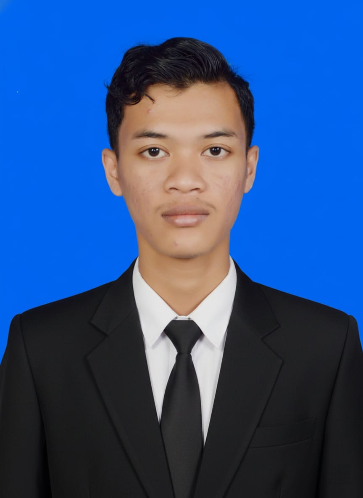

Mahasiswa semester 3 Teknik Informatika dengan IPK 3,95. Berpengalaman dalam UI/UX Design, Web Developer, Mobile Developer, dan System Analyst.
Hubungi SayaSaya mahasiswa semester 3 Teknik Informatika di PSDKU Kampus 3 Politeknik Negeri Jember. Saya memiliki pengalaman di bidang UI/UX Designer, Mobile Developer, Front-End Web Developer dan System Analyst. Dari bidang tersebut saya menguasai Bahasa Pemrograman CSS, HTML, Java Script dan Dart. Project yang pernah saya buat yaitu aplikasi pemesanan online – Refi Frozen Food & Website pemesanan online Roti 515. Saat ini saya memiliki IPK 3,95 dan terus berusaha mengembangkan kemampuan serta mencari peluang baru untuk memperoleh pengalaman dan memberikan kontribusi positif. Selain itu, saya adalah seorang Freelancer dan melakukan pembelajaran secara mandiri di luar waktu kuliah saya untuk menambah pengalaman juga pemahaman seputar pekerjaan maupun perkuliahan.
D4 Teknik Informatika (PSDKU Kampus 3 Nganjuk)
IPK: 3,95
Jurusan MIPA (Fisika, Kimia, Biologi, Informatika)
Menganalisis kebutuhan pengguna, membuat desain UI/UX dan mengatur tata letak antarmuka menggunakan Figma. Merancang dan mengimplementasikan desain UI/UX ke dalam kode program pada bagian laporan penjualan di dalam tampilan admin menggunakan HTML, CSS, dan JavaScript.
Membuat prototype rancangan desain Aplikasi pemesanan online berbasis mobile sesuai dengan kebutuhan pengguna menggunakan Figma pada tampilan dashboard pengguna, produk best seller, dashboard admin, dan detail pesanan.
Menganalisis kebutuhan pengguna, merancang dan mengimplementasikan desain UI/UX ke dalam kode program menggunakan Bahasa Pemrograman Dart. Serta membuat database dan backend untuk keperluan aplikasi.
Melakukan pengujian seluruh fitur aplikasi menggunakan metode Black Box Testing untuk memastikan semua fitur dapat bekerja dengan baik. Mencatat semua hasil sebagai laporan pengujian system.
Membuat desain UI/UX SENTRA pada fitur layanan dinas sosial dan pelaporan cepat pada bagian aplikasi. Membuat desain UI/UX SENTRA pada fitur laporan pada bagian website.
Jl. Ciliwung 6 Kel. Werungotok Kec. Nganjuk, Jawa Timur